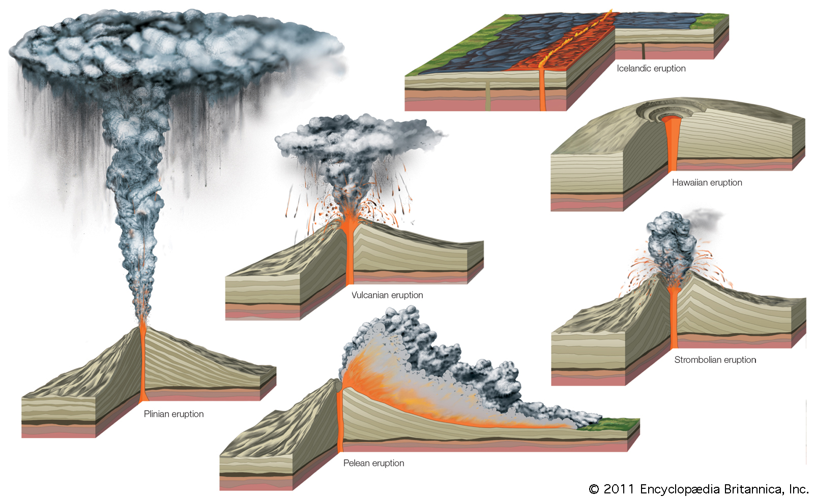

Diagram of the various eruption types Source
There are six main types of volcanic eruptions; Hawaiian, Strombolian, Icelandic, Vulcanian, Pelean, Plinian.
Hawaiian Eruptions
Hawaiian eruptions are exclusive to shield volcanoes, and involve lava flows from fissures.
They are one of the least explosive types of eruptions and involve very low viscosity lava.
Shield volcanoes can also erupt in a fissure eruption, which is essentially a Hawaiian eruption but instead of flowing from the main vent lava flows from cracks or fissures (as the name suggests).
Strombolian eruptions
Strombolian eruptions are moderately explosive, and involve clumps of lava in frequent spluttery eruptions.
Strombolian eruptions are named after Mt. Stromboli in Italy.
Strombolian eruptions often form cinder cones.
Similarly to Hawaiian eruptions, strombolian eruptions in certain volcanoes are very frequent, almost continuous.
Image of Mt Stromboli Source
Icelandic eruptions
Icelandic eruptions are very similar to Hawaiian but instead involve long parallel fissures instead of a main volcano.
Vulcanian eruptions
Vulcanian eruptions are like Strombolian ones but much more explosive, forming dark clouds of ash and gas.
Vulcanian eruptions are named after Vulcano Island, which is named after the Roman God of fire.
The vulcanian eruption of Mt. Pelee was the first ever
pyroclastic flow
A thick and fast moving flow of lava and volcanic ash
documented.
More on pyroclastic flows in the next section.
Plinian eruptions
Plinian eruptions are the most violent and explosive type of eruption.
They produce high rising clouds of gas and ash that not only rise into the stratosphere but can be continuous for hours.
Plinian eruptions are named after Pliny the Younger, who recorded the events of the Mt. Vesuvius eruption.
Plinian eruptions are often so violent that they cause part of the volcano to collapse, forming what is known as a caldera.